Про програму
Доступно два види побудови кривої Безьє: склеїна та несклеїна.
Склеїна крива
Для склеїної кривої існують два типи точок:
- Гладка точка — дотичні рівні за модулем та протилежні за напрямком.
- Кутова точка — дотичні можуть бути різними як за модулем, так і за напрямком.
Між двома сусідніми кутовими точками утворюється прямолінійний відрізок (крива першого порядку).
Керування
- Для пересування по полотні: зажати пробіл і, утримуючи ліву кнопку миші, потягнути у потрібну сторону.
- Для зміни масштабу: покрутити колесико миші.
- При віджатому Ctrl — масштаб змінюється відносно курсора.
- При зажатому Ctrl — масштаб змінюється відносно центру координатної площини.
- Для центрування екрану відносно координатної площини: натиснути C.
- Для центрування із одночасною зміною масштабу до звичайного: натиснути R.
- Для видалення поточної (обраної) кривої: натиснути Delete.
- Для видалення усіх кривих проєкту: натиснути Ctrl + Delete.
Додавання точок
Склеїна крива:
- Короткий натиск лівою кнопкою миші додає кутову точку.
- Натиск із перетягуванням додає гладку точку, де:
- Перша дотична задається від початкової точки до кінцевої (при відпусканні кнопки миші).
- Друга дотична протилежна першій.
Несклеїна крива: точки додаються лише коротким натиском.
Редагування кривих
При зажатій клавіші Ctrl доступне редагування існуючих кривих:
- Для зміни точок поточної кривої: зажати ліву кнопку миші на обраній точці та перетягнути у потрібне місце.
- Для точок склеєної кривої:
- При віджатій клавіші Alt — зберігається рівність за модулем та протилежність напрямку дотичних.
- При зажатій клавіші Alt — зберігається лише протилежність напрямку.
Вибір сегмента чи відрізка
- Для вибору сегмента чи відрізка ламаної: натиснути лівою кнопкою миші на бажаний сегмент/відрізок поточної кривої.
- Для зняття фокусу з поточної кривої: двічі натиснути мимо неї по полотну.
Після цього можна малювати нову криву або обрати існуючу, натиснувши лівою кнопкою миші на неї.

- опорна (гладка) точка

- опорна (кутова) точка
- керуюча точка
t - значення для поточного сегмента
s - номер поточного сегмента
t: 0.00
s: 0/0
| x | yламаної | yкривої |
|---|
Кольори кривої:
Кольори точок:
Кольори ламаної: